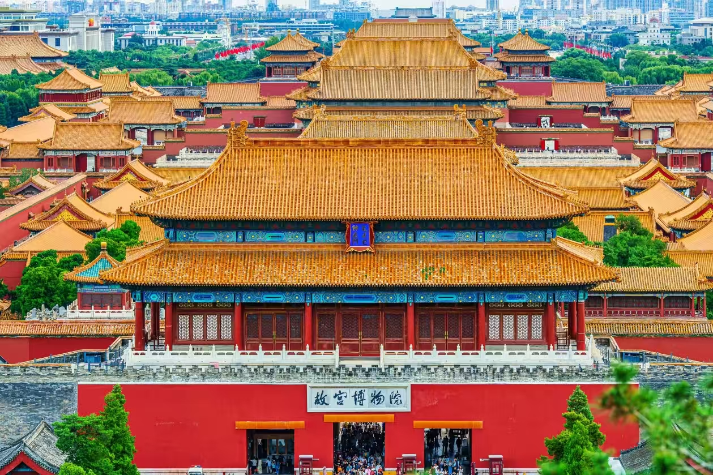

Wandering Beijing: My Notebook on What to See, Eat, and Figure Out
Beijing is one of those massive, sweeping cities that completely dwarfs you the second you arrive. Stepping out of the train station for the first time, looking up at the endless concrete ring roads, it's easy to feel a sudden wave of panic. The capital moves at an incredible, hyper-modern speed, yet ancient courtyard neighborhoods sit quietly right around the corner from neon-lit skyscrapers. It's a place that refuses to belong to just one century.
Figuring out how to move through it smoothly takes a bit of preparation since the entire city runs on a digital real-name verification network. Once you get a handle on the day-to-day rhythm, though, it becomes a fascinating place to explore.
Setting Up Your Phone and Packing for the Miles
One thing many visitors don't expect is that your original physical passport or national identity card is a non-negotiable ticket to everything here. Beijing uses a strict real-name identity setup. You must carry your physical ID on your person at all times because security personnel check it when you walk into hotel lobbies, enter any major sight, or pass through public security lanes.
If you happen to have a valid student ID card, senior citizen credentials, military paperwork, or disability documents, throw them in your backpack. Most state-backed parks offer a direct 50% discount tier or completely free entry for cardholders. As a safety backup, it's smart to snap a clear photo of both sides of your ID and store it on your phone just in case the real paper copy goes missing in a crowd.
Before leaving your hotel room, a few applications need to be loaded onto your phone. The absolute lifecycle app here is YiTongXing (亿通行). It generates a simple transit QR code on your screen that allows you to scan right past the turnstiles on every subway and bus line without buying physical single tokens. Pair that with Amap (高德地图) or Baidu Maps because typical Western navigation apps are completely lost here when trying to find small shops or alleyways.
Make sure WeChat Pay or Alipay are linked to a working card ahead of time because the city is almost entirely cashless. There's no need to carry thick stacks of paper money; sliding 50 or 100 RMB in small physical bills into a pocket for rare emergency edge cases is plenty.
A common mistake people make is packing fashionable leather boots instead of actual running shoes. The miles of walking across rough imperial stone paths can completely tear your feet apart. Leave the formal shoes behind and wear the most supportive athletic sneakers available. Packing also requires checking the seasonal patterns. Spring and autumn offer gorgeous mild afternoons but bitterly chilly nights, so throwing a light jacket into a daypack is smart. Summer brings intense UV rays and sudden tropical downpours—high-SPF sunscreen, a wide hat, and a solid umbrella are lifesavers. Winter is a dry, biting cold that stings the face, requiring a heavy down coat, thermal layers, a thick scarf, and gloves.
No matter the season, always carry a portable power bank, basic stomach meds, and heavy-duty band-aids. Also, bring a reusable water bottle. Free filtered water dispensers are tucked inside nearly every major historical site and subway terminal, which saves a fortune on plastic bottles.
Spend a few minutes mapping out your daily route by geographic proximity before walking out the door. Grouping nearby historic neighborhoods together keeps you from wasting half the afternoon caught in traffic loops across the giant multi-ring layout.
The Realities of Crowd Control and Avoiding Scams
Watching thousands of commuters quietly stream through a multi-line subway interchange during morning rush hour without a single collision is remarkable. However, visiting the heavy-hitting historic spots requires serious forward planning. Major landmarks enforce strict daily capacity caps, and they do not keep spare tickets at the gate once allocations sell out online. If you just show up hoping to buy a ticket at the entrance, security will turn you away.
It's easy to underestimate how strict the calendar rules are. The Forbidden City, National Museum, Chairman Mao Memorial Hall, and most public galleries are firmly closed on Mondays. Plan your week carefully so you don't end up staring at a locked brass gate.
Keep your wits about you when walking around crowded tourist hubs like Tiananmen Square or the Great Wall exits. Aggressive ticket scalpers or illegal private tour operators often approach people offering "guaranteed internal tickets," "exclusive entry lanes," or "secret ways to skip the lines." Don't listen to them. Touts frequently scam people with useless fake credentials, and targeted families end up turned away at checkpoints after paying exorbitant fees. Stick entirely to official municipal booking channels.
The security perimeters around the central historic core feel exactly like airport screening lanes. Security personnel will confiscate pocket lighters, matches, pocket knives, and large pressurized aerosol cans, so leave those back at the hotel room. Travel as light as possible to breeze through the checkpoints quickly, and keep an eye on smartphones and backpacks when caught in thick crowds.
Playing the Great Booking Game
Thankfully, wandering through historic zones like the Nanluoguxiang hutongs, Yandai Xie Street, or the scenic willow-lined banks of Shichahai requires zero booking or entry fees. You can just walk right in. For the massive historic sites, though, the booking windows operate on strict schedules:


The Forbidden City (The Palace Museum): This is the toughest ticket to secure in town. Reservations open exactly 7 days in advance at 8:00 PM (20:00) sharp through the official "故宫博物院" WeChat mini-program. Setting a phone alarm for 7:58 PM is highly recommended to beat the page freeze when the booking window opens. Morning entries cost 60 RMB during peak season and offer the best lighting for photography. It's completely closed on Mondays.
Tiananmen Square and the Flag Raising Ceremony: Walking onto the square is completely free, but registration must be secured 1 to 7 days ahead via the "天安门广场预约参观" mini-program. If you want to see the famous sunrise flag-raising ceremony, select that specific early morning slot and get to the security gates at least an hour early to beat the massive crowds.
Chairman Mao Memorial Hall: Admission is free, but you must reserve a spot. Tickets open 1 to 6 days ahead at 12:30 PM daily through its dedicated booking mini-program. It's only open in the morning, closed on Mondays, and expects total silence inside.
National Museum of China: Another fantastic free spot. Bookings open 1 to 7 days in advance at 5:00 PM (17:00) daily on its official platform. It's closed on Mondays, and because the collection is absolutely massive, setting aside at least half a day to take it all in is a smart move.
Badaling Great Wall: This section gives you the longest planning runway, opening slots up to 15 days in advance at 8:00 AM daily. You can grab a timed pass directly through their official platform or via major verified domestic travel channels. It's beautifully restored but gets incredibly packed on holidays, so catching an early morning ride out there is your best bet. If you want something less frantic, Mutianyu is a great alternative with cable cars and lighter crowds, while the rugged, unrestored towers of Jinshanling or Jiankou are incredible for adventurous hikers but take more effort to reach.
The Summer Palace, Temple of Heaven, and Prince Gong's Mansion: These classic imperial parks are much easier to handle. Booking 3 to 5 days ahead on their official accounts is plenty. Going early in the morning allows you to watch local residents practice Tai Chi and fly kites before the afternoon tour groups arrive.
Local Flavors and Neighborhood Snacks
The aroma of roasting sesame, sizzling mutton fat, and sweet bean sauce hangs over certain districts like an irresistible cloud. Sitting down for authentic Peking Roast Duck is a total ritual. The duck arrives with incredibly crisp skin and tender meat, and the dining room usually buzzes with families and local groups sharing large tables. The chef carves the bird tableside, serving up impossibly crispy skin meant to be dipped lightly into white sugar, alongside tender breast meat that you wrap in thin wheat pancakes with sweet bean sauce, slivered scallions, and cool cucumber slices.
Stay far away from the overpriced tourist traps sitting right outside major scenic gates. Instead, head to Siji Minfu (四季民福) for its reliably perfect crunch and great value, or Bianyifang (便宜坊) to try their traditional closed-oven roasting style that keeps the meat incredibly juicy. Once they're done carving, ask them to fry up the remaining duck frame with salt-and-pepper spices instead of making soup—it's a massive flavor upgrade.
Another soul-warming favorite is Old Beijing Copper-Pot Mutton Shabu-Shabu. It uses a traditional charcoal-fired copper chimney pot filled with simple, clear boiling water. Because the broth is clean, it relies entirely on the quality of the fresh, hand-cut slices of mutton, which you swirl in the pot and dip into a rich, savory sesame paste mixed with sweet pickled garlic. For the real deal, check out Nanmen Shuanrou (南门涮肉) or the legendary Jubaoyuan (聚宝源) in the heart of the Niujie neighborhood.
| Dish / Snack | Recommended Spots |
|---|---|
| Peking Roast Duck | Siji Minfu, Bianyifang |
| Copper-Pot Mutton Shabu | Nanmen Shuanrou, Jubaoyuan |
| Zhajiangmian | Fangzhuanchang No. 69, Haiwanju |
| Luzhu Huoshao (Stew) | Menkuang Hutong, Xiaochangchen (小肠陈) |
| Scalded Tripe (BaoDu) | Baodu Feng (爆肚冯), Jinshenglong |
| Traditional Sweets | Huguosi Snacks, Jinfang Snacks |
When trying traditional Miancha—a thick, comforting millet mush topped with savory sesame paste—many first-time visitors naturally reach for a spoon. However, the real old-school way is to hold the bowl and sip directly from the rim without utensils. Taking a bite of authentic Zhajiangmian—chewy wheat noodles tossed with crisp greens and deep pork sauce—at Fangzhuanchang No. 69 or Haiwanju is a classic culinary experience.
For the adventurous, Luzhu Huoshao is a deeply savory, earthy stew of simmered pork intestines, lungs, and baked flatbread doused in garlic purée and hot chili oil. Do not skip BaoDu (quick-scalded tripe dipped in sesame sauce), smooth Wandouhuang (sweet pea cake), or soft Lvdagun (glutinous rice rolls coated in roasted bean powder).


Stay far away from the commercialized Wangfujing Snack Street; it's an overpriced tourist hub with mediocre flavors. If you want real culinary history, take a walk down Niujie, the historic center for authentic Halal dining, where locals line up for fresh mutton cuts and sticky rice cakes. Stroll along Huguosi Street to find a high density of classic snack counters, or stop by Qianmen and Xianyukou for excellent sit-down options right near the center of town.
If you want a younger vibe, the trendy stalls around Nanluoguxiang and Yandai Xiejie mix historic courtyard scenery with creative modern street snacks. Just avoid the generic, overpriced food carts parked right by scenic entrances.
Navigating the Transit System and Finding a Hotel
When it comes to getting around, the subway is your absolute best friend. It cruises right past the city's infamous gridlock and runs directly to almost every historic sight you'll want to see. Fares are based on distance, starting at an affordable 3 RMB and going up from there, while the specialized airport express lines are a flat 25 RMB. Just pull up your YiTongXing app and scan the QR code to pass through the turnstiles.
The city buses are even cheaper, usually costing just 1 or 2 RMB per ride. One thing worth planning ahead for is an important operational rule: you must scan your transit app both when you get on through the front door and right before you step off through the back door. Forgetting to scan when exiting results in a maximum possible route fare penalty on your account.
Keep the weekday rush hours in mind—the subways get incredibly packed from 07:30 to 09:00 AM and again from 5:00 to 7:00 PM. If you're not racing against a tight attraction booking deadline, give yourself a break and travel outside these windows. Also, the major transfer stations often have long, winding pedestrian tunnels between lines, so don't cut your travel times too close. If you're heading out to the Badaling Great Wall, ignore the unlicensed drivers trying to wave you into their cars on the street; hop on the official Suburban Railway S2 Line train or take an authorized tourist express bus from the central transit squares instead.
The number one rule for picking a hotel room in Beijing is simple: make sure it's within a short walk of a metro station entrance. The quiet inside a secluded courtyard alley just fifty meters off a roaring multi-lane avenue is magic.
For first-timers, the Qianmen and Dashilan neighborhood is excellent; it sits right south of Tiananmen Square and has a deep mix of budget chains and unique boutique spots. Dongsi and Nanluoguxiang offer a dreamlike hutong atmosphere filled with independent cafes and stunning courtyard homestays. Xizhimen is a massive transit hub packed with practical domestic business hotels that offer great mid-range value, making it perfect if you want a straightforward, budget-friendly place to sleep. If shopping and nightlife are the priority, the gleaming towers of Guomao and Sanlitun host premium international luxury brands, though they sit further east from the historic core.
Economy chain brands like Hanting, Home Inn, or 7 Days usually cost between 100 and 300 RMB a night near metro stations, mid-range rooms run 300 to 600 RMB, and courtyard guesthouses swing wildly from 200 to well over 1,000 RMB. During peak travel seasons or major holidays, book far ahead to avoid surging prices or empty calendars. Returning to a warm, heated courtyard room after walking fifteen miles in a biting winter wind feels like absolute paradise.